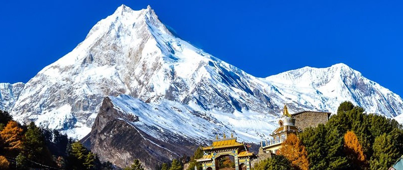

Manasalu Conservation Area

Manaslu Conservation Area (MCA), declared on December 28, 1998 is the second conservation area under NTNC management. Manaslu, a mountainous region in northern part of Gorkha District, has a fragile but diverse natural resource base and a rich cultural environment. MCA encompasses a 1,663 sq. km. area with 7 VDCs. There are about 9,000 inhabitants living in MCA and 2,000 species of plants, 33 mammals, 110 birds, 3 reptiles and 11 butterflies in 11 types of forest have been reported from the area. With the declaration of MCA in 1998, Government of Nepal handed over the management responsibility of MCA to NTNC for 10 years. The objective was to improve the capacity of the local communities in the Manaslu area to benefit from tourism in an environmentally benign manner for sustainable development. With the expiry of the management mandate, on the request of the local communities, the District Development Committee of Gorkha and the major political parties in the district, the Government of Nepal has extended the management mandate for another 10 years till 2018.
The area was neglected in terms of infrastructure development as well as all basic services, which directly affected the livelihood of the people. The local people were deprived of the benefits of access, safe drinking water supply and electricity. Education and health services were almost non-existent. Since no other economic opportunities were available, they had to depend on marginal agriculture, animal husbandry and exploitation of natural resources for survival. As Manaslu is a food deficit region, high dependency on natural resources was constantly straining the capacity of the ecosystem. Tourism, due to the semi-restricted area status of the six VDCs adjoining the Tibet Autonomous Region of China, is limited to 1,000 trekkers per annum, and only about 60% of the quota is subscribed. The local people do not enjoy the benefits from even these low numbers, as the groups have to visit the region in organized groups that are self-sufficient in all their requirements before they start the journey.